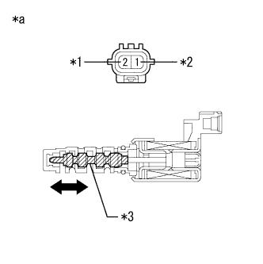
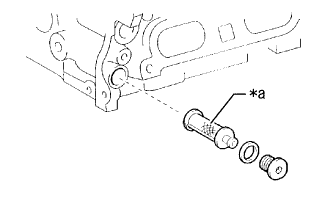

DTC P0016/18 VVTセンサ(レンジ外れ) |
| DTC No. SAE/TCCS | DTC検出条件
| 点検部位 |
|---|---|---|
| P0016/18 |
|
|
参照。| 手順1 | ダイアグコード読み取り |
SST(TaSCAN)をDLC3に接続する。
IG ONにする。
SST(TaSCAN)の画面表示に従ってダイアグコードを確認する。(要領は参照)
| 結果 | 飛び先 |
|---|---|
| P0016/18を出力 | A |
| P0016/18および他のダイアグコードを出力 | B |
|
| ||||
| A | |
| 手順2 | TaSCANアクティブテスト実施（VVT制御） |
SST(TaSCAN)をDLC3に接続する。
エンジン停止状態で、IG ONにする。
SST(TaSCAN)の画面表示に従い、[アクティブテスト]-[VVT制御]を選択する。
エンジンアイドル回転状態にして、[未実施/実施]を実行する。
| アクティブテスト(オイルコントロールバルブ状態) | エンジン状態 |
|---|---|
| 未実施(作動しない) | 通常のアイドル回転数 |
| 実施(作動する) | エンスト、ラフアイドルになる |
|
| ||||
| OK | |
| 手順3 | ダイアグコード消去 |
SST(TaSCAN)をDLC3に接続する。
IG ONにする。
SST(TaSCAN)の画面表示に従ってダイアグコードを消去する。(要領は参照)
| 次へ | |
| 手順4 | ダイアグコード読み取り |
SST(TaSCAN)をDLC3に接続する。
IG ONにする。
SST(TaSCAN)の画面表示に従い、チェックモードにする。
エンジンを始動し走行テストを実施する。
SST(TaSCAN)の画面表示に従い、ダイアグコードを読み取る。(要領は参照)
| 結果 | 飛び先 |
|---|---|
| 出力なし | A |
| P0016/18を出力 | B |
|
| ||||
| A | ||
| ||
| 手順5 | カムシャフトタイミングオイルコントロール バルブASSY単体点検 |
抵抗点検
カムシャフトタイミングオイルコントロールバルブASSYを取りはずす。
SST(トヨタエレクトリカルテスター)を使用して、端子間の抵抗を測定する。
| 点検端子 | 点検条件 | 基準値 |
|---|---|---|
| 1 - 2 | 約20°C | 6.9 to 7.9Ω |
|  |
作動点検
端子間にバッテリ電圧をかけ、スプールバルブが作動することを確認する。
| *1 | プラス |
| *2 | マイナス |
| *3 | スプールバルブ |
| *a | コネクター非接続状態 (カムシャフトタイミングオイルコントロールバルブASSY) |
|
| ||||
| OK | |
| 手順6 | オイルコントロールバルブ フィルタ単体点検 |
オイルコントロールバルブフィルタを取りはずす。
|  |
オイルコントロールバルブフィルタのメッシュ部に詰まりがないかを点検する。
| *a | メッシュ部 |
|
| ||||
| OK | |
| 手順7 | カムシャフトタイミング ギヤASSY点検 |
参照)
|
| ||||
| OK | |
| 手順8 | バルブタイミング調整（タイミングチェーンの緩み、歯飛び確認） |
| 次へ | |
| 手順9 | ダイアグコード消去 |
SST(TaSCAN)をDLC3に接続する。
IG ONにする。
SST(TaSCAN)の画面表示に従ってダイアグコードを消去する。(要領は参照)
| 次へ | |
| 手順10 | ダイアグコード読み取り |
SST(TaSCAN)をDLC3に接続する。
IG ONにする。
SST(TaSCAN)の画面表示に従い、チェックモードにする。
エンジンを始動し走行テストを実施する。
SST(TaSCAN)の画面表示に従い、ダイアグコードを読み取る。(要領は参照)
| 結果 | 飛び先 |
|---|---|
| P0016/18を出力 | A |
| 出力なし | B |
|
| ||||
| A | ||
| ||